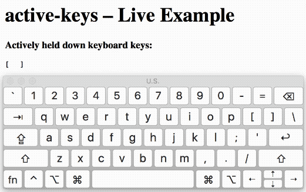

active-keys
Know and listen for which keys the user is currently holding down using standard KeyboardEvent#key values.
npm install --save active-keys
import keyWatcher from 'active-keys';
keyWatcher.addEventListener('change', () => {
console.log(Object.keys(keyWatcher.activeKeys));
});- Even handles multiple of the same key held down (e.g. down right Alt, then down left Alt, and then up left Alt - will still indicate Alt down).
- Includes React helper.
- Requires support for Set and KeyboardEvent#key.
- Will err on the side of indicating that a key is inactive.
